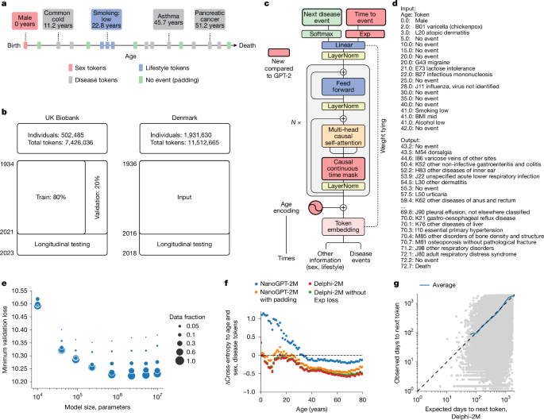
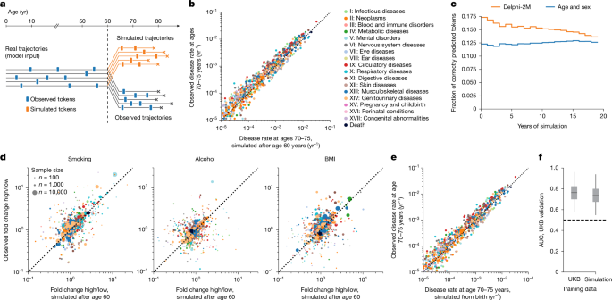
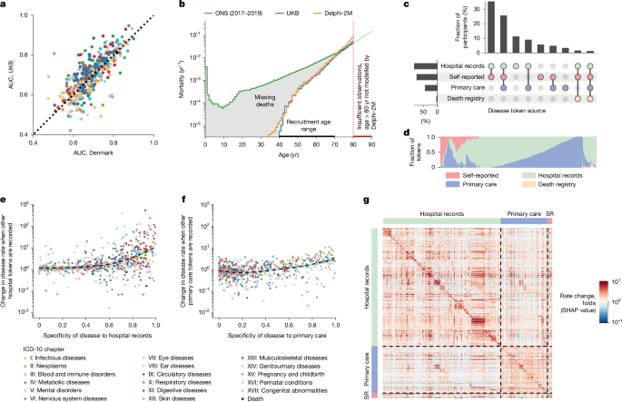

Learning the natural history of human disease with generative transformers
This page covers the original research article (and its minor author correction). Delphi-2M, a GPT-2-based generative transformer, learns lifetime disease trajectories from electronic health records and predicts the future incidence of more than 1,000 ICD-10 diagnoses simultaneously. Trained on 402,799 UK Biobank participants and validated on 1.93 million Danish registry individuals with no parameter changes, Delphi-2M matches or outperforms single-disease clinical risk models while also enabling synthetic trajectory sampling for privacy-preserving AI development and SHAP-based interpretability of temporal comorbidity patterns.
Correction note: This Author Correction (DOI 10.1038/s41586-025-09879-y) fixes a typographical sign error in the Methods "Exponential waiting time model" section — a spurious minus sign before the cross-entropy loss term was removed. The scientific conclusions of the paper are unaffected.
Why It Matters
- First population-scale multi-disease generative model. Delphi-2M predicts rates for the full ICD-10 spectrum (1,000+ diagnoses) from a single model — not one model per disease — representing a step change in breadth over prior clinical risk tools.
- Cross-national generalization without retraining. Trained on UK Biobank, the model achieves AUC 0.67 (vs. 0.69 internal) on 1.93 million Danish registry individuals with no parameter updates, demonstrating portability across different national healthcare coding systems.
- Synthetic trajectory sampling unlocks privacy-safe AI development. A model trained purely on Delphi-2M-generated synthetic trajectories reaches AUC 0.74 — only 0.02 below the real-data model — suggesting synthetic health data can bootstrap downstream AI without exposing personal records.
- SHAP-based interpretability reveals temporal comorbidity structure. The explainability layer maps how each past diagnosis modulates future disease rates over time, capturing phenomena (e.g., cancer sustaining elevated mortality for years; septicaemia risk recovering quickly) consistent with clinical knowledge and Nelson-Aalen estimates.
- Honest bias characterization. Delphi-2M transparently reports healthy-volunteer, selection and data-source missingness biases inherited from UK Biobank — a model of rigorous self-assessment expected in high-impact clinical AI publications.
Why Nature (Editorial Fit)
- Paradigm-level contribution: extends the LLM paradigm from language to health records at population scale — the analogy to language modelling is both clean and novel enough for Nature's flagship interest in transformative methods.
- Cross-national validation provides independent evidence: the Danish external test (1.93M individuals, no retraining) is a strength rare in clinical AI, providing the kind of replication Nature requires.
- Policy and clinical impact: projecting 20-year disease burden at individual and population levels directly informs healthcare planning, screening prioritization, and precision medicine — broad societal relevance.
- Reproducible and open: code released on GitHub (gerstung-lab/delphi), synthetic data framework described, UK Biobank and Danish registry data pathways cited — matches Nature's open-science expectations.
Core Data — Sources & Volume
- Training cohort
- UK Biobank — 402,799 participants (80% split) recruited 2006–2010, ages 37–73; data used up to 30 June 2020. Includes ICD-10 first-occurrence data from primary care (cat. 3000), hospital admissions (cat. 2000), cancer registry (fields 40005/40006), death registry and self-report (field 20002).
- Internal validation
- 100,639 UK Biobank participants (20% split); longitudinal test on 471,057 participants (those alive by cut-off) evaluated on incidence from 1 July 2021–1 July 2022 (1-year data gap enforced).
- External validation
- Danish National Patient Registry (LPR) + Danish Register of Causes of Death — 1.93 million individuals aged 50–80 on 1 January 2016; disease records spanning 1978–2018; 11.51 million disease tokens; 0.96 million evaluation tokens across 796 ICD-10 codes.
- Disease vocabulary
- 1,258 distinct tokens: 1,256 ICD-10 level-3 diagnosis codes (chapters I–XVII + neoplasms) + lifestyle tokens (BMI 3 levels, smoking 3 levels, alcohol 3 levels) + sex, death, no-event padding.
- Lifestyle covariates
- Self-reported sex (field 31), BMI (field 21001), smoking (field 1239), alcohol intake (field 1558) from UK Biobank baseline; not available in Danish data (treated as absent).
- Time window
- UK Biobank: from birth to 30 June 2020 (training) / 1 July 2022 (longitudinal test). Danish registries: 1978–2016 for history, 2017–2018 for evaluation.
- Availability
- UK Biobank: restricted access via ukbiobank.ac.uk. Danish registries: application to Danish Patient Safety Authority / Danish Health Data Authority. Code: github.com/gerstung-lab/delphi. Model checkpoint: UK Biobank controlled access, upload ID 7318.
| Dataset | Role | Volume / Scope | Access |
|---|---|---|---|
| UK Biobank (UKB) | Training & internal validation cohort | ~503K participants; primary care, hospital, cancer, death, self-report; UK 2006–2022 | ukbiobank.ac.uk |
| Danish National Patient Registry (LPR) | External validation; nationwide longitudinal hospital records | 1.93M individuals; 1978–2018; 11.51M disease tokens | sundhedsdatastyrelsen.dk |
| Danish Register of Causes of Death | Mortality data for external validation | National-level Denmark, since 1970 | Via Statistics Denmark |
| ICD-10 coding system | Disease vocabulary (1,256 top-level codes) | 1,256 distinct diagnoses (chapters I–XVII + neoplasms) | WHO / NHS mapping |
Note: volume figures (402,799 training participants; 1.93M Danish individuals; 1,258 token types) are stated verbatim in the article. Lifestyle covariates are not available in Danish data and were treated as absent for the external test.
Core Methods
- Delphi-2M architecture: GPT-2 base (nanoGPT implementation) with three key modifications — (1) continuous age encoding via sine/cosine basis replacing discrete positional encoding; (2) exponential waiting-time output head predicting time to next event via competing exponentials; (3) amended causal attention masks blocking same-age tokens.
- Exponential waiting-time model: Each disease token is treated as a competing exponential process with rate λi = exp(logiti). The probability of next diagnosis j equals the softmax over logits (standard cross-entropy), while the time to next event T* ~ Exp(Σλi) adds a second log-likelihood loss term. Note: the Author Correction fixed a typographical minus sign in this formula.
- Model size and scaling: Hyperparameter screen over 486 models; optimal Delphi-2M has 2.2M parameters (embedding dim 120, 12 layers, 12 heads). Scaling laws confirm performance improves with data volume up to a limit set by training data size.
- Generative trajectory sampling: Autoregressively sample (token, age) pairs from any partial history. Population-level disease incidences at ages 70–75 are well recapitulated; 17% of disease tokens correctly predicted in year 1 of sampling (vs. 12–13% for age/sex baseline), declining to 14% at 20 years.
- Synthetic data training: 400K trajectories sampled from Delphi-2M from birth (random sex assignment). A model trained solely on synthetic data achieves average AUC 0.74 vs. 0.76 for the real-data model — only 0.02 gap.
- SHAP interpretability: PartitionExplainer applied to 100,639 validation trajectories; masking replaces tokens with no-event placeholders; aggregated SHAP matrix reveals chapter-level comorbidity clusters and time-dependent mortality effects.
- UMAP embedding visualization: 1,270 × 120 token embedding matrix; cosine metric; disease codes cluster by ICD-10 chapter purely from co-occurrence patterns, confirming the model learns clinically meaningful structure.
- Evaluation: Age–sex-stratified AUC averaged across 5-year bins; DeLong 95% CI; calibration curves (predicted vs. observed incidence by decile); APS and Brier score; comparison against QRisk3, SCORE2, PREVENT, Framingham, UKBDRS, Charlson, Elixhauser, Llama 3.1(8B) and AutoPrognosis v2.0.
Core Figures & Tables





Tables: no main-text tables (0 in original article); Supplementary includes Tables 1–5 (AUC values, method comparison, subgroup biases, UKB field list) and 12 supplementary figures plus 10 Extended Data figures.